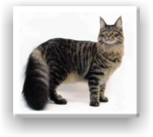
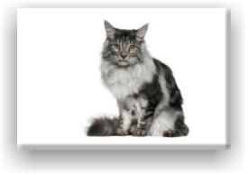

Maine Coon
Main Coons are long hair cats that are originally from the U.S. All of their characteristics have a certain use. They have a glossy, heavy, and water resistant fur. The fur is longer on the stomach, which protects them from the wet and snow. The thick bushy tail is wrapped around the cat when it sleeps, which protects the cat from the cold winters. Also, they have furry ears to protect them from the cold. Here's some good news. If you have a Maine coon cat, you won't have to groom it a lot -just some weekly combing for it's fur. They come in a variety of colors.
Most of these cats are very rambunctious, and incredibly smart! Quick question: Do you think Maine Coon cats love water? If you said yes, you are correct. Well, most of these type of cats love water. If you are planning on adopting a cat, I recommend this type of cat.
Most of these cats are very rambunctious, and incredibly smart! Quick question: Do you think Maine Coon cats love water? If you said yes, you are correct. Well, most of these type of cats love water. If you are planning on adopting a cat, I recommend this type of cat.

